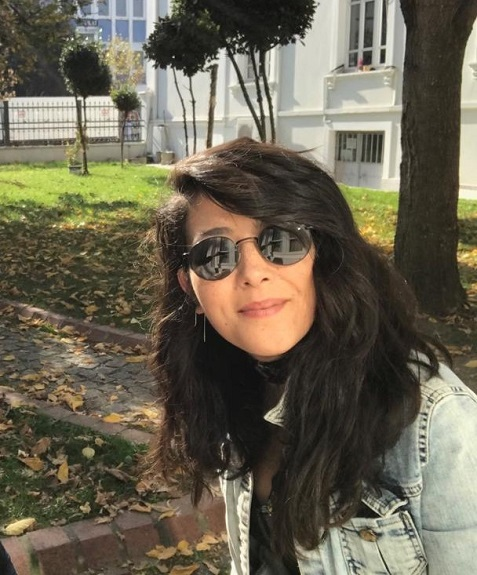

Hoş Geldiniz...
Merhaba ben Filiz ARAT. 24 Şubat 1987 yılında Mersin'de dünyaya geldim.Aslen Niğde'li olsamda ailemle birlikte Mersin'de yaşıyordum. 2016 yılından beri iş sebebiyle Sakarya'da ikamet ediyorum.
Seyahat etmek ve yeni yerler görmek, yağlı boya resimler yapmak ve dans etmek hayatta en sevdiğim şeylerin başında geliyor. Arkadaşlarımla zaman geçirmek ve kendimi geliştiren aktivitelerde bulunmak vazgeçilmezlerimin arasındadır.